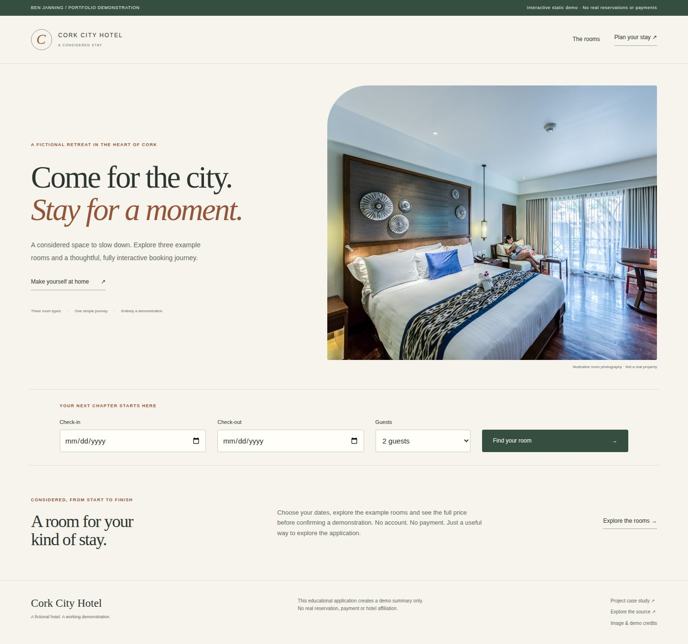
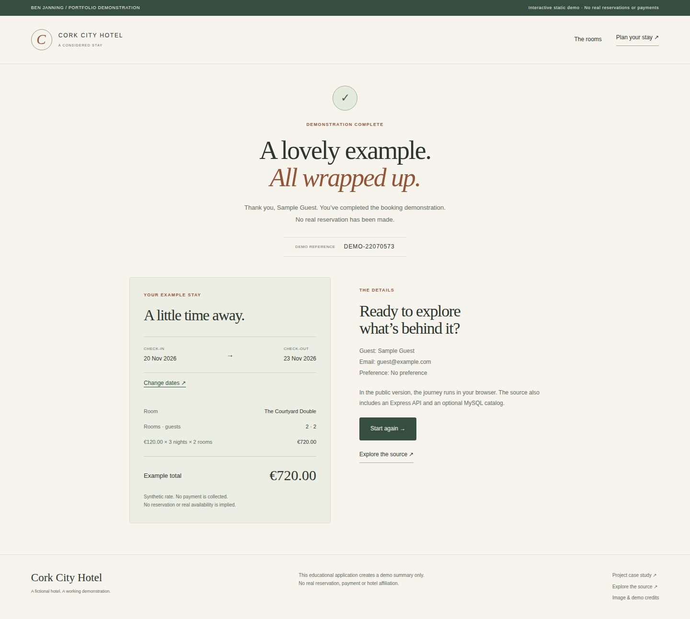

Hotel booking prototype.
A polished multi-step hotel demonstration with exact pricing, stable confirmation retries and recoverable booking reviews.
Public demo: browser-based static version. See source for architecture and limitations.

What I built
Preserved the established hotel interface and strengthened the shared booking rules and review lifecycle so date changes, expired sessions and repeated confirmations behave predictably.
Why it matters
A multi-step transaction should carry information reliably from one screen to the next. The project explores session state, validation and pricing across a booking journey.
How it works
- 01
Choose future dates, a room type and quantity; the shared rules calculate an exact integer-cent example total.
- 02
Enter sample guest details and review the quote. Changed or expired reviews are refreshed without losing the selection, and require explicit confirmation again.
- 03
Complete a demonstration confirmation, revisit it safely or edit dates and review a new quotation; no actual room is reserved.
The technical challenge
A booking review can outlive its session or price, and two simultaneous requests can otherwise create different confirmation references. The workflow separates a reviewed quote from its immutable receipt: stale reviews are rebuilt for explicit approval, while retries for the same review preserve identity. Date changes invalidate downstream selections and retain reusable guest details.
What it demonstrates
Server-rendered web development, session handling, input validation and turning a multi-step process into a working application.
Evidence, with context.
Backend/rule regressions, an isolated MySQL 8.4 catalog check and complete browser journeys are required before release. Tests cover simultaneous confirmation identity, review expiry, strict numeric inputs, exact-cent totals, date changes, restored sessions, stale stored prices, reload/reset and mobile layout. The linked run identifies the exact tested revision.
Verified source: afeb025eca29 · Tests and visual capture ↗



Scope and limitations
The hotel, rooms, prices and guest records are synthetic. Public Pages runs only the shared browser demonstration; it does not run Express or MySQL. Stock is illustrative per room type, not a date-based hotel inventory or a held allocation. Confirmations create no real reservation, payment, account or message. Review/receipt state is temporary; the bounded Express cache and local session store are educational rather than a production booking database.
Visual provenance and source attribution are recorded in the evidence register ↗.
Under the surface.
Architecture, methods and improvements
One shared JavaScript rules module serves Express and the static frontend. Rates use positive integer cents within the existing DECIMAL(10,2) catalog range; counts reject coercion and ambiguous numeric syntax. Reviews have a shared 15-minute lifetime. A bounded temporary token-keyed receipt cache keeps concurrent Express retries consistent; browser confirmation reuses the same reviewed receipt. Recovery refreshes session/catalog and review, preserving sample guest details while requiring a new explicit confirmation. CSRF and safe catalog errors remain enforced.
Try it locally
Run npm ci, npm test and npm start for Express at http://127.0.0.1:3000. No database is needed by default. npm run build:demo generates the public static version. An optional isolated MySQL Docker setup and opt-in integration test are documented separately.
The portfolio is a static GitHub Pages site. Server applications run locally; the portfolio does not collect bookings, credentials or payments.